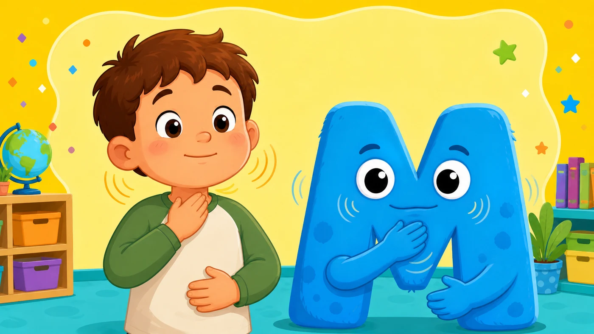

Fabrique le son
mmmm
— suis les trois étapes

1
Ferme bien tes lèvres — touche ici quand c'est fait
2
Pose la main sur ta gorge : ça vibre ? touche ici
3
Appuie ET GARDE le doigt en faisant mmmm
↻ Encore
🎉 Bravo !
Tu sais fabriquer le son mmmm.
↻ Rejouer